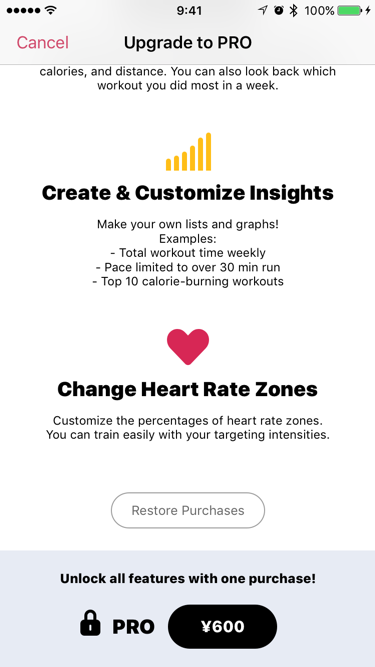

Help
Restore PRO purchase
If you already purchased PRO, you can restore it without having to purchase it again.
(PRO is a non-consumable purchases item)
How to restore
- Show "Upgrade to Pro"
You can show this from "Stats" of tab.
- Scroll down and find the "Restore Purchases" button.
- Tap "Restore Purchases".

If you try to restore and nothing happens
-
Make sure that you're signed in with the same Apple ID you used to make the purchase. Sign in with a different Apple ID if you need to.
- Check the restrictions on your device to make sure in-app purchases are allowed.
- Restart your iPhone.
if app shows "Regrant Failed"
Regrant Failed
Please purchase the software application first.
This error message is caused when two different Apple ID’s are used when downloading the app and trying to restore a purchase.
- Sign out to the App Store
- Sign in again with the correct account
- Restart your iPhone
- Restore purchases with Zones app
If you can not fix by the above, remove Zones app and reinstall it.
Be sure to select "Keep" the health data when removing the app. see:
Saved Data and Backup
References